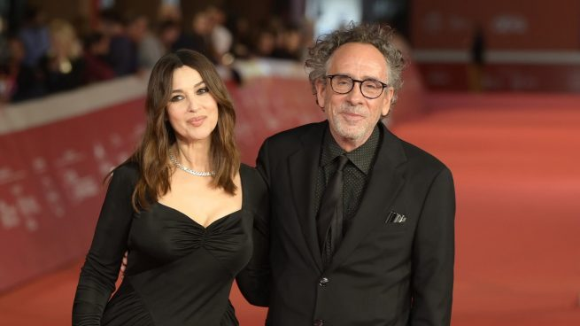

El extraño mundo de
Timothy Walter Burton es un director de cine, productor, guionista, dibujante, escritor y animador estadounidense. Nació el 25 de agosto de 1958 en Burbank, California.
Hijo mayor de Bill Burton, exjugador de béisbol de ligas menores que más tarde trabajaría en el Parque Burbank, y de Jean Erickson, dueña de una tienda de regalos. “Tim” tiene un hermano menor con el que no tiene mucha relación llamado Daniel Burton
Durante la mayor parte de su infancia representaba, con su hermano, parodias relacionadas con delitos sangrientos, y él mismo se consideraba introvertido —una de sus anécdotas personales es la de haber simulado un asesinato para asustar a los vecinos, hasta tal punto que uno de ellos llamó a la policía—. Por ello recibió el alias «Axe Wound» (herida de hacha). Siendo un niño ya realizaba cortometrajes en el patio trasero de su casa en la calle Evergreen utilizando técnicas de animación con películas de 8 mm sin sonido (una de ellas fue titulada la Isla del Doctor Agor, que hizo cuando tenía 13 años).
En 1976, recibió una beca para ingresar en el Instituto de las artes de California (fundado por Walt Disney a manera de «plataforma alternativa de aprendizaje» para jóvenes interesados en la animación), del que se graduó en 1979. Ese año realizó Stalk of the Celery Monster, corto animado de menos de dos minutos que le dio la oportunidad de ser contratado por los estudios Disney

La vida privada de Tim ha sido muy discreta sin embargo ha tenido un par de relaciones en el medio. En 1989, contrajo matrimonio con la artista alemana Lena Gieseke. Estuvieron casados hasta 1991. Posteriormente estuvo comprometido con Lisa Marie desde 1992 a 2001. Tim Burton y Helena Bonham Carter fueron una de las parejas más icónicas de Hollywood. Se conocieron en el set de la película “El planeta de los simios” en 2001 y comenzaron a salir. Aunque nunca se casaron, estuvieron juntos durante 13 años y tuvieron dos hijos, Billy(2003) y Nell Burton(2007) . Vivían en casas contiguas en Belsize Park, Londres, para mantener su relación, ero no compartían una casa común, finalmente anunciaron su separación en 2014. Finalmente en 2023 confirma relación con Mónica Bellucci, aunque había rumores de esta pareja no fue hasta la alfonbra roja de la cinta Diabolik, donde se presentaron juntos de la mano como pareja y de la cual sigue actualmente enamorado.

Tim Burtón ha participado en inumerable cantidad de proyectos, ya sea desde la dirección, la producción, ilustración o el guión, las obras de Burton son reconocidas al instante, es po eso que a su estilo sombrío y melancólco le han denominado "Burtoniano", he aquí una recopilación de su trabajo.
La gran aventura de Pee-Wee (1985)
Paul Rubens le ofreció dirigir la versión cinematográfica de su popular personaje Pee-wee Herman, conocido gracias a sus espectáculos para HBO. De esta forma, Burton dirigió su primer largometraje como cineasta independiente, La gran aventura de Pee-Wee, creada con un presupuesto estimado de 7 millones de dólares y acreedora por un total en taquilla de 40 millones
Beetlejuice (1988)
Beetlejuice en 1988 centrándose en una comedia de humor negro acerca de un matrimonio que acaba de morir y para recuperar su casa deciden pedir ayuda al repulsivo y excéntrico fantasma llamado Beetlejuice, al que deben invocar nombrándole tres veces. La adaptación fue protagonizada por Michael Keaton, Winona Ryder, Alec Baldwin y Geena Davis. La película obtuvo ganancias estimadas en alrededor de 80 millones de dólares, así como un premio Óscar a Mejor Maquillaje.
Batman (1989)
En 1989, Burton recibió la propuesta de dirigir su próximo largometraje acerca del héroe ficticio Batman —en esta ocasión, con un colosal presupuesto para su realización. Sin embargo, filmar Batman no fue una experiencia totalmente satisfactoria para el cineasta, quien se vio en múltiples discusiones y altercados El mayor problema, fue el reparto seleccionado por el director, quien ofreció el protagónico a Michael Keaton. Además, escogió a Jack Nicholson como el Joker. Cuando la película finalmente se estrenó, se convirtió en el éxito de taquilla más grande de ese entonces, con una recaudación de más de 400 millones de dólares a nivel mundial.
Edward Scissorhands (1990)
En 1990, Burton escribió, junto a Caroline Thompson, el guion de su siguiente largometraje, Edward Scissorhands, un personaje creado por un excéntrico inventor (Vincent Price)Edward parecía humano, pero de manera peculiar, porque no había sido terminado por su creador al morir este de manera repentina, y tenía tijeras en lugar de manos. Ubicada en los suburbios —se filmó en Florida—, la película es considerada como la autobiografía de Burton, centrada en su infancia dentro de los suburbios en California
Batman returns (1992)
Burton finalmente accedió a dirigir la secuela de la franquicia, con la condición de que tuviera total control creativo en el largometraje, titulado finalmente Batman Returns e interpretado por un reparto integrado por Michael Keaton (nuevamente en el rol protagonista como Batman), Danny DeVito (el Pingüino) Michelle Pfeiffer (Catwoman) y Christopher Walken. Aún más gótica y personal que su predecesora, la película recibió quejas bajo el pretexto de que su contenido era muy fuerte para la audiencia infantil, que aunado a la insatisfacción de las restantes audiencias con la sexualidad explícita —personificada por el sugestivo y fetichista estilo del disfraz de Catwoman
The Nightmare Before Christmas(1993)
The Nightmare Before Christmas, cuyo argumento gira en torno al rey de la ciudad de Halloween, Jack Skeleton, y sus intenciones por convertirse en un benévolo Santa Claus cuando Jack y los habitantes de Halloween transforma la Navidad en una pesadilla y nadie quiere esa fiesta Jack decide volver a ser el rey del mal y esforzarse en su trabajo asustando a la gente. Fue dirigido por Henry Selick y basado enteramente en la historia y los personajes de Burton y al principio no fue bien recibida, pero con el tiempo llegó a ser considerada una película de culto
Ed Wood (1994)
Retrata la vida de Ed Wood Jr., un realizador considerado "el peor director de la historia". Protagonizada por Johnny Depp, es una obra biográfica en homenaje al director de películas de horror y ciencia ficción de bajo presupuesto que Burton veía cuando era niño. Filmado en blanco y negro, dirigiendo a Bela Lugosi, interpretado por Martin Landau destacando su soberbia interpretación, quizá de las mejores de esa década, Bill Murray y Lisa Marie—, considerado por numerosas personas como uno de los mejores trabajos que ha hecho el cineasta.
Mars Attacks!(1996)
Inmerso en la iconografía kitsch de los años 1950, el siguiente proyecto de Burton fue Mars Attacks!, para el cual se reunió nuevamente con Elfman. Basada en una serie de cartas de ciencia ficción, la película es un híbrido de las películas de fantasía de la década de 1950 y de las de desastre total de los años 1970 Fue despreciada por los críticos y casi ignorada por la audiencia norteamericana.
Sleepy Hollow(1999)
Sleepy Hollow fue estrenada en 1999 con un escenario sobrenatural, sets únicos y una nueva actuación de Johnny Depp encarnando a Ichabod Crane, un detective interesado en la ciencia forense, basándose en la historia redactada por Washington Irving. Bien recibida por los críticos y con mención especial a la musicalización acompañada de una fotografía impecable a cargo de Emmanuel Lubezki, la película ganó un premio Óscar por mejor dirección artística, así como dos BAFTA por mejor diseño de vestuario y mejor diseño de producción.
El planeta de los simios(2000)
El planeta de los simios fue un éxito comercial, que recaudó 68 millones de dólares en su primer fin de semana de estreno. Fue la primera vez que Helena Bonham Carter actuó en una película de Burton.
Big Fish(2003)
Big Fish de 2003, escrita por John August, recibió un total de cuatro nominaciones a los Globos de Oro, y contó con actuaciones de Bonham Carter, Ewan McGregor, Jessica Lange, Albert Finney, Steve Buscemi, Danny DeVito y Alison Lohman. La película iba a ser dirigida por Steven Spielberg antes de que Burton se encargara del proyecto, tras la muerte de su propio padre.
Charlie y la fábrica de chocolate(2005)
Charlie y la fábrica de chocolate estrenada en 2005, fue un éxito en taquilla que recaudó más de 207 millones de dólares en Estados Unidos. La imagen, voz y actuación de Depp como el dueño de la fábrica, Willy Wonka, fueron comparadas con las de los cantantes Michael Jackson y Marilyn Manson, aunque el actor argumentó que su principal inspiración provino de antiguas estrellas infantiles de televisión estadounidenses.
Corpse Bride(2005)
Corpse Bride está basada en un cuento de la tradición rusa-judía ortodoxa, en la que un joven llamado Víctor, mientras practica sus votos matrimoniales en el bosque antes de pedirle matrimonio a su prometida, se compromete accidentalmente con el cadáver de una novia llamada Emily, quien esperaba a su verdadero amor y, por lo tanto, se lleva a Víctor a la tierra de los muertos. Depp le dio su voz a Víctor y Bonham Carter, a la novia.
Sweeney Todd(2007)
La adaptación del musical de tres horas requirió algunos cambios para convertirse en una película de dos horas. Por esta razón, se quitaron algunos versos originales de algunas canciones y otras fueron descartadas. Un aspecto central de este largometraje fue lograr mantener el punto principal de la historia original entre sus tres protagonistas: Sweeney Todd, Mrs. Lovett y Toby. Se estrenó en Estados Unidos el 21 de diciembre de 2007 y el 15 de febrero de 2008 en España.
Alicia en el país de las maravillas(2010)
Alicia en el país de la maravillas se estrenó en 2010. Es una adaptación de las novelas Las aventuras de Alicia en el país de las maravillas y A través del espejo y lo que Alicia encontró allí, escritas por Lewis Carroll, y cuenta con la técnica 3-D en su rodaje, que comenzó en septiembre de 2008.
Sombras tenebrosas(2012)
Sombras tenebrosas, estrenada en 2012, es una adaptación cinematográfica de la serie de televisión homónima de gran audiencia en Estados Unidos. Dicho film mantiene a lo largo de la historia la mezcla entre elementos góticos propios de Burton con los elementos propios de la década de 1970, época en la que transcurre
Frankenweenie(2012)
Frankenweenie es una adaptación del cortometraje que realizó para Disney en 1984 con una duración de 35 minutos, en la versión original el corto fue grabado en blanco y negro con personas reales, incluido Sparky. Esta versión está rodada en blanco y negro en 3D usando la técnica stop motion, los personajes principales fueron los mismos, pero se añadieron nuevos personajes y se alargó la trama.
Big Eyes(2014)
Big Eyes, estrenada en 2014 y protagonizada por Christoph Waltz y Amy Adams, es una colaboración con Silverwood Films. Narra la historia de Margaret y Walter Keane, famosos en las décadas de los cincuenta y sesenta gracias a sus retratos de niños con los ojos más grandes de lo habitual. Cuando se separaron, ella reveló que era la auténtica autora de las obras, mientras que él se dedicaba en realidad a hacer de relaciones públicas
Miss Peregrine's Home for Peculiar Children(2016)
Miss Peregrine's Home for Peculiar Children es una adaptación de la novela homónima de Ransom Riggs. La película, estrenada en Estados Unidos el 30 de septiembre de 2016, sigue trama del libro, aunque Burton se tomó bastantes licencias con el consentimiento de Riggs, quien presenció el rodaje
Dumbo (2019)
En 2015 Disney confirmó que Burton dirigiría Dumbo, adaptación de acción en vivo de la película animada de mismo título. La película, que cuenta con la participación de Colin Farrel, Michael Keaton, Eva Green y Danny DeVito en los papeles protagónicos, se estrenó el 11 de marzo de 2019 en Los Ángeles.
Beetlejuice 2(2024)
Beetlejuice Beetlejuice es una próxima película de comedia de terror y fantasía estadounidense de 2024, dirigida por Tim Burton, a partir de un guion de Alfred Gough y Miles Millar, basado en una historia de Gough, Millar, y Seth Grahame-Smith.
Vincent(1982)
Mientras trabajaba como artista conceptual, se hizo amigo del ejecutivo Julie Hickson y el encargado de desarrollo creativo de Disney, Tom Wilhite. En 1982, Wilhite lo financió con 60 000 dólares para producir una adaptación del poema Vincent, que Burton había escrito poco tiempo antes como un microrrelato para niños. Durante dos meses, Burton colaboró con animadores especializados en stop motion para producir el corto de cinco minutos de duración, filmado en blanco y negro, influido directamente por las películas alemanas de los años 1920. Narrado por el propio Price, Vincent marcó el inicio de una amistad entre el actor y Burton, que perduraría hasta la muerte del primero en 1993
Hansel y Gretel(1982)
Poco después, participó en la producción de una versión japonesa, en imagen real, del cuento de los hermanos Grimm Hansel y Gretel, para Disney Channel; la historia incorporaba elementos kung-fu para describir el enfrentamiento entre los niños y la bruja. La película fue transmitida, por única ocasión, en Halloween de 1982.
El mundo de Stainboy(2000)
El chico mancha (Stainboy) es un personaje creado por Tim Burton en su libro de poemas e ilustraciones "La melancólica muerte del chico ostra", y narra las aventuras de un niño superhéroe que posee una característica un tanto peliculiar: mancha todo por donde pasa
The killers: Bones(2006)
Una historia de amor que cala hasta los huesos, en el vídeo musical del tema "Bones" de The Killers, dirigido por Tim Burton y protagonizado por Devon Aoki
The killers: Here with me (2012)
El video musical de "Here with Me" de The Killers, dirigido por Tim Burton, presenta una narrativa oscura y surrealista que es característica del estilo del director. El video cuenta con las actuaciones de Winona Ryder y Craig Roberts y se desarrolla en una atmósfera gótica y melancólica.
Wednesday(2022)
Tim Burton participó en la serie "Wednesday" como director y productor ejecutivo. "Wednesday" es una serie de Netflix centrada en el personaje Wednesday Addams de "The Addams Family". La serie se enfoca en los años de Wednesday como estudiante en la Academia Nevermore, explorando tanto sus habilidades psíquicas emergentes como sus intentos de resolver un misterio que involucra a sus padres.
Tim Burtón ha tenido una trayectoria con un estilo único, el cual ha sido aclamado por la gente, es por ellos que su trabajo se ve expuesto en más de una exhibición, es por eso que les traemos las exposiciones más famosas del universo de Tim Burton.
El Mundo de Tim Burton
Extraída del archivo personal de Tim Burton y representando la producción creativa del artista desde su infancia hasta la actualidad, esta exposición de 500 dibujos, pinturas, fotografías, cuadernos de bocetos, obras de imágenes en movimiento e instalaciones escultóricas se centra en los temas y motivos visuales recurrentes que resuenan en los personajes y mundos distintivos que se encuentran en el arte y las películas de Burton.
Esta exposición dio comienzo el 28 de marzo al 3 de agosto de 2014 en la ciudad de Praga y ha viajado por el mundo en ciudades de Japón, Alemania, Brasil, China, México y muchas más, actualmente se sigue exhibiendo en Praga y proximanete estará en Reino Unido
El Mundo de Tim BurtonEl laberinto de Tim
Esta exposición de experiencia inmersiva consiste en un emocionante laberinto que muestra diferentes temas del cineasta, a través de una variedad de salas que contienen obras de arte originales y utilizan tecnología, luces, sonido y escenografía de sus películas. De igual forma ha viajado principalmente en Europa, en lugares como España, Belgica, Brucelas y Paris.
El Laberinto de Tim Burton
La espeluznante belleza de los monstruos: diez años del arte de Tim Burton
Con texto de Leah Gallo y diseño de Holly C. Kempf, esta recopilación definitiva fue editada por Derek Frey, Gallo y Kempf y abarca cuarenta años de conceptos cinematográficos, ideas para libros, proyectos no realizados y obras de arte personales del artista. “La escabrosa belleza de los monstruos: diez años del arte de Tim Burton ” celebra el aniversario de la publicación del libro transformando su introducción y sus trece capítulos en catorce galerías distintas que ofrecen una experiencia física ampliada del libro
Las Vegas perdidas
Las instalaciones escultóricas y digitales presentadas en el Museo del Neón, muchas de las cuales son creaciones específicas del sitio, amplían la exploración artística de Burton y simultáneamente celebran sus vínculos con Las Vegas y su herencia del neón. a exposición comprendía una combinación de obras nuevas y piezas expuestas anteriormente y estuvo en exhibición desde el 15 de octubre de 2019 hasta el 15 de febrero de 2020.
Las Vegas perdidasTim Burton
Esta exposición exploró toda la gama de su obra creativa, rastreando la corriente de su imaginación visual desde los dibujos de su primera infancia hasta su obra madura en el cine. Reunió más de setecientos ejemplos de dibujos, pinturas, fotografías, obras de imágenes en movimiento, arte conceptual, guiones gráficos, marionetas, maquetas, vestuario y material cinematográfico efímero raramente visto de películas como Edward Scissorhands , The Nightmare Before Christmas , Batman , Mars Attacks!, Ed Wood y Beetlejuice , y de proyectos personales no realizados y poco conocidos que revelaron su talento como artista, ilustrador, fotógrafo y escritor trabajando en el espíritu del surrealismo pop. La exposición de la galería estuvo acompañada de una retrospectiva completa de los largometrajes y cortometrajes teatrales de Burton, así como de una publicación profusamente ilustrada. La exposición abrió las puertas al público el 22 de noviembre de 2009 al 26 de abril de 2010 en el Museo de Arte Moderno (MoMA) Nueva York, NY y duró 3 años de gira en distontos países.
Tim Burton